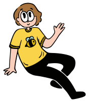
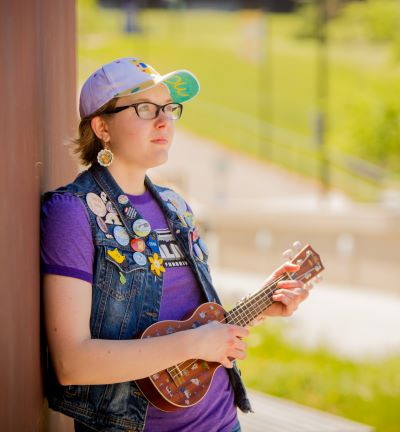
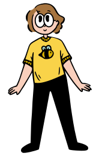

Meghan irl

About Me(ghan)
Meghan Rennie is often an artist, sometimes a facilitator, and hopefully always a friend. She is enamoured with humanity and passionate about projects: currently, she dabbles in printmaking, zines/DIY publishing, graphic design, music-making, and comics. She often writes about herself in the third person.
What would you like to know about me?

- Creative Practice
- Personal Life
- Contact Info
What would you like to know about me?
Creative Practice
Meghan Rennie has a lazy Susan of creative interests, which she spins and samples from rather chaotically. Her artistic “career” began at sixteen, when she started her own business (SunSoft Art) selling pinback buttons and linocut greeting cards. For every five cards sold, she wrote a personal message in one and sent it to a family at the Northern Alberta Ronald McDonald House.
Around this time, she also started writing and recording songs and sharing her music online. Originally, this was under the project title Be Kind to Dogs, though she has since switched to performing under her own name. As a musician, she has performed at The Verge Arts Festival in Cold Lake and at Arts Days events in Lethbridge, and has been on the award-winning CKXU show For the Record. Additionally, she created the intro/outro music for the podcast Excuses to Connect.
Meghan’s involvement in the music scene goes beyond writing and performing songs. She has a minor in music marketing and management from Hogeschool Utrecht in the Netherlands, and she often volunteers with CKXU Radio Society in roles varying from fundraiser to president of the board of directors.
Between other projects, Meghan keeps busy. She undertakes the occasional graphic design commission, creating logos and designing print publications. She makes comics, usually as mini-zines which she disseminates around town. She also writes: her poetry and prose fiction has appeared in multiple publications, including The Meliorist, Pulp Kings, The Blue Marble Review, and Sad Girl Review, and her one-act dark comedy, It’s a Dead Body!, was performed at the 2019 Verge Arts Festival. Her academic writing has also been accepted into international marketing conferences.

Iterative processes soothe her perfectionist tendencies. She likes practice rounds, second chances, and opportunities to improve.
She’s oriented around collection and categorisation. She likes curating, compiling, and collaging elements to form a new whole. She revels in mixing fiction and non-fiction, and in building rules for new realities.
Physical media is incredibly important to her. She loves everything that’s real, hand-holdable, and unavoidable—impossible to lose in the digital deluge. She wants something right in front of her, in front of you.
Her personal tastes tend towards maximalism. She wants colours and patterns and noise—cartoons and hallucinations and synaesthesia—verbose visual language.

Personal Life
Meghan Rennie has no hometown. As a military brat, she was born on Elmendorf Air Force Base in Alaska, spent her childhood moving every two years, then lived through an angsty adolescence in Cold Lake, Alberta. She is currently pursuing a combined bachelor’s degree in General Management and New Media at the University of Lethbridge.
Meghan is a generally busy person who always has a handful of projects in-progress, though she’s trying to be less of a workaholic about it all. She collects buttons and pins, patterned socks, zines, and vintage Garfield merchandise. She can speak French, though honestly it’s much easier to write than to speak; her Dutch isn't great, but she does her best. Her life goals are to make art, make friends, and be kinder to herself.
- Favourite Book: A Tree Grows in Brooklyn by Betty Smith
- (One of Many) Favourite Song(s): “All I Really Want” by Alanis Morissette
- Favourite Creature: Pond snail (Lymnaeidae)
Contact Information
You can reach Meghan via email at meghancrennie@gmail.com.